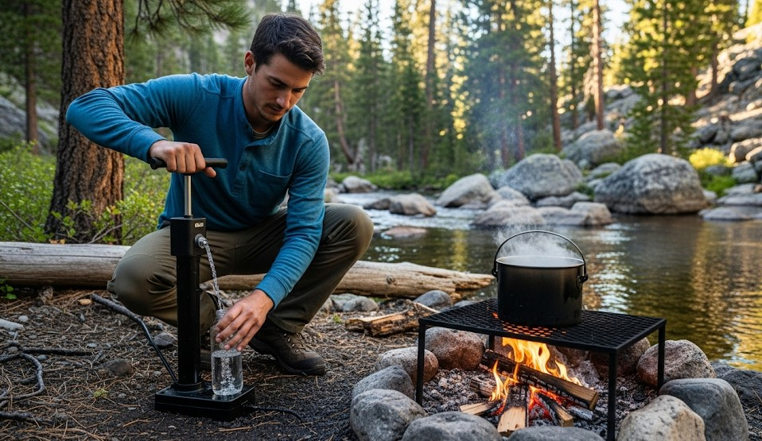

How to Purify Water in the Wild
Click here for WWSWA top choiceObjective
Produce safe drinking water under field conditions using the fastest effective method for your situation—without re-contaminating it afterwards.
Scenario (Example)
Example: After heavy rain the creek is cloudy and cold. You have a canister stove, a 0.1 μm squeeze filter with backflush syringe, chlorine dioxide tablets, and one 1-liter bottle.
Decision Flow (pick one)
- Clear water + short on fuel: Filter → chemical or UV polish.
- Cloudy/silty: Settle and pre-filter → boil or filter.
- In a hurry: Filter now → drink; treat extra liters while you move.
Method 1 — Boil (gold standard)
- Skim from moving water or draw mid-depth from a lake (avoid bottom sediment).
- Pre-filter through a bandana/coffee filter until visibly clearer.
- Bring to a rolling boil for 1 minute (3 minutes above 6,500 ft).
- Cool with the lid on; do not dip fingers or pour through a dirty cap.
Field note: On a small canister stove, 1 L typically reaches a rolling boil in 4–7 minutes depending on wind and pot shape.
Method 2 — 0.1 μm Squeeze Filter
- Fill the soft bag; keep the mouth just below the surface so you don’t vacuum sediment.
- Thread on the filter and squeeze steadily—don’t crush the fibers with a death-grip.
- Backflush after every 1–2 liters to keep flow high.
- Add a carbon element if taste is poor (optional).
Field note: Expect ~60–90 seconds per liter when clean; slower with silt—backflush sooner.
Method 3 — Chemical (Chlorine Dioxide)
- Pre-filter cloudy water.
- Add per label (tabs/drops). Swirl and crack the cap slightly so threads get contact.
- Wait 30 minutes (60 minutes if water is very cold or turbid).
Method 4 — UV (clear water only)
- Pre-filter until water looks clear.
- Stir with UV pen per instructions, usually 60–90 seconds per liter.
- Protect treated water from light and dirty lids.
Quality Checks
- No visible floaters; odor reduced.
- Contact times met (chemical/UV) or rolling boil achieved.
- Clean threads and cap—most re-contamination happens here.
Real Example
On a muddy Ozarks creek, a team pre-filtered through a T-shirt, then ran a squeeze filter and backflushed every liter. Taste was improved with a carbon element. They bottled 3 L in 15 minutes and moved before dark.
Common Errors
- Using UV on cloudy water (ineffective).
- Touching the bottle mouth with dirty fingers or filter threads.
- Not accounting for altitude on boil times.
10-Minute Drill
Collect 2 liters; treat 1 by boil and 1 by filter. Time both. Note fuel used and clarity difference. Choose the faster method for your terrain on the next outing.
← Previous | All Articles | Next →